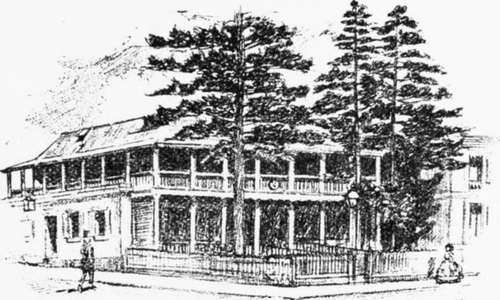
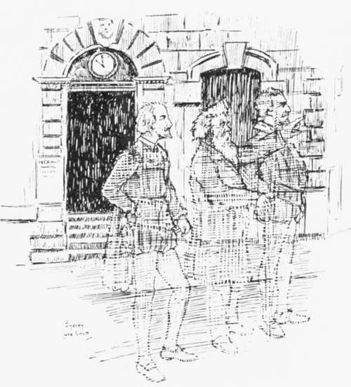

The Ghosts Of Hunter Street
Description
This section is from the book "Stories Of Old Sydney", by Charles H. Bertie.
The Ghosts Of Hunter Street
IT is a very pretty difference! Cook having announced a personally conducted tour from Olympia to Australia at very reasonable rates, a large party undertook the journey.
On arrival at Sydney, Sir Henry Parkes, much to Cook's disgust, took charge of a party of distinguished poets, including
Shakespeare, Burns, Spenser, and Ben Jonson, and conducted them round the City.
They were shown the site of the "Empire" building--the office in which was published "Murmurs of the Stream"-the principal public schools, and finally Parliament House.
It is not my purpose to chronicle their conversation, although one remark of Ben Jonson's caused Shakespeare to smile. The party came to an intersection of two streets, and there was an inn on each of the four corners. Ben remarked that as he always travelled in an arc when he came out of an inn, he couldn't see how he'd ever get out of that intersection.
Late in the afternoon, after the main sights had been viewed, Judge Roger Therry gathered together a small party of men who had lived in Hunter Street to renew their associations with the street.
At the top of the road the Judge introduced Mr. Ta well, a genteel-looking Quaker, who (he explained) had lived on one side of the street, while he lived on the other.
" Ta well,'" said Sir Henry, " T seem to remember something about you."
" I hope it's in the middle of my career," said Tawell, hurriedly.
"Ah ! I have it. Didn't you empty gallons on gallons of good rum into the harbour once?"
" I did," said Tawell, piously. " It is one of the things 1 am proud of. Friend, such a lesson in practical temperance Sydney has never seen since."
" But a shameful waste of good rum." muttered Sir Henry, passing down the street.
The Judge whispered to his neighbour. " He came out as a convict for forgery, made a lot of money, led a most exemplary life, went home to England, poisoned a woman, and was hanged. Most extraordinary character! When he was winding his affairs in the colony before going to England lie had about £7,000 worth of lulls. As he could not wait until they were due he called on Mr. William Barton, the sharebroker, who had an office down in Macquarie Place, and asked him to get offers for the lot in cash. £5,000 was the highest Mr. Barton could get. This Tawell refused, and took the bills away. Mr. Barton forgot all about him, but one day Tawell walked in and said: ' Friend, I have been thinking it was not thy fault that I would not accept the highest price that thou couldst, by thy labour, get offered for my bills; thou didst thy best, so here is one per cent, for thee on the highest offer that thou didst elicit.' Tawell left £50 on the desk and walked out."
Several old gentlemen became very excited when the party reached the corner of Hunter and Castlereagh Streets.
" Dear, dear," said one of them, " they couldn't even leave the old Club House Hotel. Man, do you remember what nights we had in the old place?"
" Ah, yes! those were the days. The best ' stone fence ' in town to be had there."
" Well, I must say I preferred a ' spider.' "
" Mine was always a ' Lola Montez.' " chimed in another veteran.
" Excuse me," said a young man, "what was a ' stone fence,' a ' spider,' and a ' Lola Montez?' "
" There you are, Mr. Josephson, even the old names gone."
" A ' stone fence,' my dear sir, was a ginger beer and brandy; a ' spider,' lemonade and brandy; and a ' Lola Montez 9 was compounded of Old Tom, ginger, lemon and hot water."
Club House Hotel, Hunter and Castlereagh Streets.
" And if you knew the lady it was named after, my boy, you'd see the connection," chuckled a jovial-looking old gentleman.
" I lived in the old house many years before it descended to a lodging house and an inn," said Air. Josephson, a handsome old gentleman, " and I believe that I planted one of the pine trees that grew there."
" Well, they were there, Mr. Josephson, when I bought the property," said a stout-looking person, who answered to the name of Kite. 41 I knew that property would be very valuable, so when I made my will I put in a provision that it wasn't to be leased for more than seven years at a time, but I met a man the other day, and he told me that my heirs got round me. What d'ye think they did? Put a special Act of Parliament through to enable 'em to lease the site for twenty-one years! Rank ingratitude, I call it."
At the corner of Hunter and Pitt Streets, Captain Brookes pointed out the site of his house, as did the Honourable Richard Jones.
" Why," said Mr. Beale, " that's where the ' Currency Lass/ that I kept in the forties and fifties, stood. Stirring days they were, too; why. I used to get a new vest nearly every day in the gold davs."
" Dear me," said Mr. Jones, " how was that?"
" Well, it was like this. A lucky digger would come in and start to play up and break something. Usually it was a window ; they'd get more noise out of that. When I started to put 'em out and call a policeman, they'd go for me and naturally my vest would be torn. Next day the magistrate would order the digger to pay for the damage, including a new vest for your humble servant. When I wanted a new coat, I'd put on an old 'tin and put one of 'em out. Clothes! why I didn't buy any for years."
" Come on, gentlemen," said Sir Henry, who had been impatiently waiting, " we'll have no time to look at-ah-some of the more important places."
Near Hamilton Street a little excitable old man drew up to Sir Henry and said: " Do you know, Sir Henry, if they intend to close up Hamilton Street?"
" There's Hamilton off again," said Roger Therry. " You must remember, Sir Henry, that Mr. Hamilton kept a baker's shop at the corner of the street, and he maintains that it was named after him, and is afraid his one hope of being immortalised will be removed. I tell him that the street was named after Lady Hamilton, but he will not believe me." This last with an effort at a wink.
" No, no," burst out poor Hamilton, " I am assured by several competent persons that it was named after me."
Sir Henry, however, heard little of this. He was striding up the street and stopped only when he reached a shop between Pitt and George Streets.
" There," he said with a wave of his hand, " is where I lived. These hands worked hard in that shop. Just imagine it, gentlemen, if you can? I, who for fifty years made history in this land; I, who moulded an infant State into a man amongst the nations, in that shop made toys for children!"
A respectful silence followed this address. Sir Henry stood for a minute gazing at the building, then turning and walking away he said: "Enough. I dreamt things here, but up there," pointing towards Parliament House, " I did them."
It was on the return up Hunter Street that the difference referred to at the beginning occurred. On the arrival of the party opposite the Union Bank, they found an old gentleman in the last stages of fury. " Confound them." he was roaring; not one jot of respect for the man who made 'em."
What's the trouble, Mr. Flower?" said Mr. Therry.
" Trouble," said the infuriated Mr. Flower, " just look there. You remember our old firm. Flower, Salting and Co., one of the largest and wealthiest in the State: well, that's where our store stood. The last time I was here the store was there, and now look. Swept away to make room for the bank, a bank, mark you, that we started and made."
"Never mind, Mr. Flower." said Sir Henry, in a soothing tone, *' after all the bank is more than the individual."
Posh !" ejaculated the incensed Mr. Flower. " d'ye think the individual has no claims to consideration? That old store deserved some consideration too. In the gold days hundreds of thousands of pounds were stored there, and trade from all the world came in and out."
A party of distinguished poets.
" My dear sir," replied Sir Henry, " if you are looking for gratitude from posterity you will be vastly disappointed. It has been observed this day-it has been commented on more than once-that although various statues adorn the streets of this city, nowhere did we find one of me."
" Bosh! Why shouldn't you find one of me ?" snorted the old gentleman. " I've done more for the country as a merchant than you as an inflated gasbag."
Then the storm burst. Sir Henry referred to Mr. Flower as a man who fattened on the work of other men. During the altercation Mr. Flower related with deep disgust a story told him, he said, by a country editor recently.
The editor said that on one occasion Sir Henry delivered a speech in the country town where he owned a paper. He was setting up the speech the same night and ran out of " I's." He sent a boy over to the proprietor of the opposition paper to see if he could borrow some. " I's," said the rival editor, " I've been splitting H's for the last hour."
Just after this the bell rang for our return, but the subject of "Merchant or Politician for the country's good?" is down for discussion at the next meeting of our debating society, and there is promise of an interesting and possibly a warm debate.
Continue to: